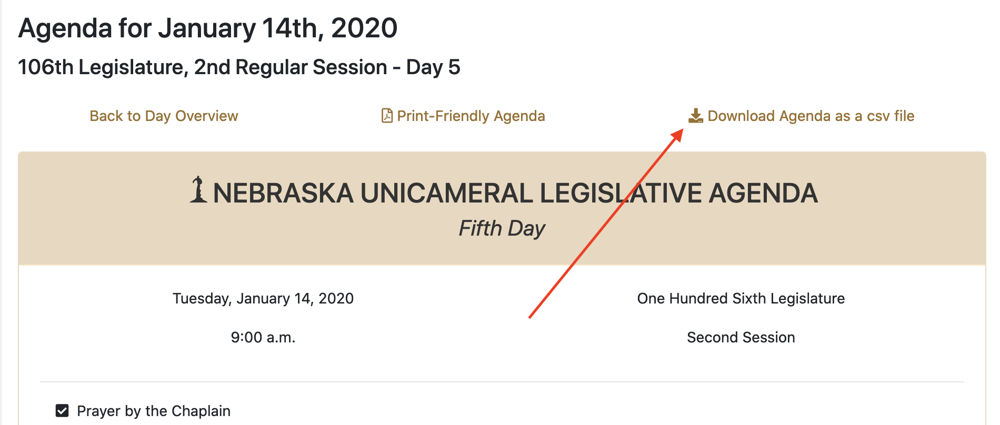

Chapter 16 Advanced rvest
Continuing a discussion from the last chapter, this is an example of when it goes from Easy to Moderately Difficult.
In the last exercise, we scraped bills out of one day of floor activity in the Nebraska Legislature. What if we wanted all of them? Let’s say we wanted to keep a running scoreboard of who has introduced the most bills that have seen the floor?
Here’s how to use some programming knowledge with R to grab all days and merge them together. First we start with libraries, as we always do.
Now we’ll start the trickery. So we need to know what days the legislature is in session. Fortunately, the legislature tells us that in a drop down menu. Inspect the dropdown menu of this page. See the list?

If it’s HTML in the page, we can grab it, so let’s do that. We start with the URL to any day, really.
I’m going to create a thing called a calendar and store the list of option values in there. So when I’m done, I’ll have a list of dates.
calendar <- url %>%
read_html() %>%
html_nodes(xpath = '//*[@id="leg_day"]') %>%
html_nodes("option") %>%
html_attrs()## [[1]]
## value
## "2020-01-08"Now this part gets tough, but if you follow, it’s logical. It’s step by step, really.
First, I noticed at the top of the agenda pages is a link to the daily agenda in csv format. Convenient, that.

If you look at that url, it looks like this:
https://nebraskalegislature.gov/calendar/agenda.php?day=2020-01-14&print=csvIf we can change the date in that url to each day of the session, we’d get a csv file for each day of the session that we can merge together.
Let’s break down the steps to do that.
- I need a place to store this. A lazy way? Just import a day, filter everything out of it, and I’ve got an empty table I can
rbindstuff into. - I need to set up a loop. For each day in the calendar, do some stuff.
- I need to clean out the word selected (an HTML thing) from one of the dates.
- I need to just scrape days that have business pending on the floor. So I can skip the first few days and I can skip any days into the future.
- I need to take my date from calendar and add them to the url. Then I need to take that agenda url and add the csv parts.
- Then I can use read_csv like we have been to read the CSV url directly.
- Then I just rbind my new csv to the one I created.
- This isn’t going to work perfectly every time, so I’m going to add some
tryCatchstatements that say try this, and if it doesn’t work, do nothing. - Then, because I’m a decent fellow, I’m going to pause my query for three seconds to give their servers a break.
Let’s run it.
allbills <- read_csv("https://nebraskalegislature.gov/calendar/agenda.php?day=2020-01-14&print=csv", col_types = cols()) %>% mutate(Date = as.Date("2020-01-01"))%>% filter(`Section Header` == "Blah")
for (i in calendar){
date <- i[1]
checkdate <- as.Date(date)
if (checkdate <= Sys.Date() & checkdate > as.Date("2020-01-13")) {
agendaurl <- paste("https://nebraskalegislature.gov/calendar/agenda.php?day=", i, sep="")
csvurl <-paste(agendaurl, "&print=csv", sep="")
tryCatch(
agenda <- read_csv(csvurl, col_types = cols()) %>% mutate(Date = checkdate),
error = function(e){NA})
tryCatch(
allbills <- rbind(allbills, agenda),
error = function(e){NA})
Sys.sleep(3)
}
}## Warning: 2 parsing failures.
## row col expected actual file
## 31 Oneliner delimiter or quote C 'https://nebraskalegislature.gov/calendar/agenda.php?day=2020-03-06&print=csv'
## 31 Oneliner delimiter or quote 'https://nebraskalegislature.gov/calendar/agenda.php?day=2020-03-06&print=csv'## Warning: 34 parsing failures.
## row col expected actual file
## 3 -- 1 columns 3 columns 'https://nebraskalegislature.gov/calendar/agenda.php?day=2020-03-18&print=csv'
## 4 -- 1 columns 4 columns 'https://nebraskalegislature.gov/calendar/agenda.php?day=2020-03-18&print=csv'
## 10 -- 1 columns 3 columns 'https://nebraskalegislature.gov/calendar/agenda.php?day=2020-03-18&print=csv'
## 20 -- 1 columns 7 columns 'https://nebraskalegislature.gov/calendar/agenda.php?day=2020-03-18&print=csv'
## 21 -- 1 columns 3 columns 'https://nebraskalegislature.gov/calendar/agenda.php?day=2020-03-18&print=csv'
## ... ... ......... ......... ..............................................................................
## See problems(...) for more details.## Warning: 35 parsing failures.
## row col expected actual file
## 3 -- 1 columns 3 columns 'https://nebraskalegislature.gov/calendar/agenda.php?day=2020-03-19&print=csv'
## 4 -- 1 columns 4 columns 'https://nebraskalegislature.gov/calendar/agenda.php?day=2020-03-19&print=csv'
## 10 -- 1 columns 3 columns 'https://nebraskalegislature.gov/calendar/agenda.php?day=2020-03-19&print=csv'
## 20 -- 1 columns 7 columns 'https://nebraskalegislature.gov/calendar/agenda.php?day=2020-03-19&print=csv'
## 21 -- 1 columns 3 columns 'https://nebraskalegislature.gov/calendar/agenda.php?day=2020-03-19&print=csv'
## ... ... ......... ......... ..............................................................................
## See problems(...) for more details.And after that, I have a dataset of entries of bills on the floor. So if I want to see who has had the most bills on the floor – including repeats – I could answer that now.
## Selecting by n## # A tibble: 5 x 2
## Introducer n
## <chr> <int>
## 1 Kolterman 46
## 2 Pansing Brooks 35
## 3 Vargas 35
## 4 Bolz 23
## 5 Hughes 22Senator Kolterman, collect your prize.
A note about advanced scraping – every site is different. Every time you want to scrape a site, you’ll be puzzling over different problems. But the steps remain the same: find a pattern, exploit it, clean the data on the fly and put it into a place to store it.